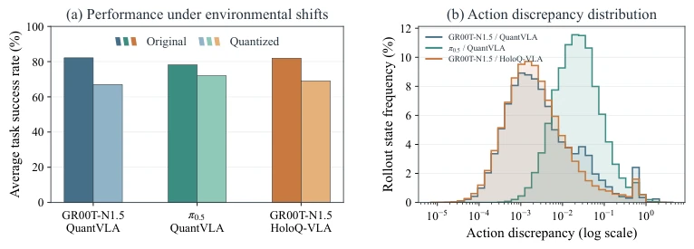
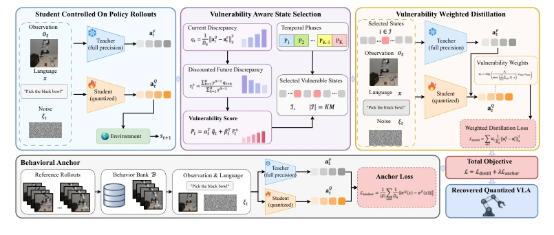
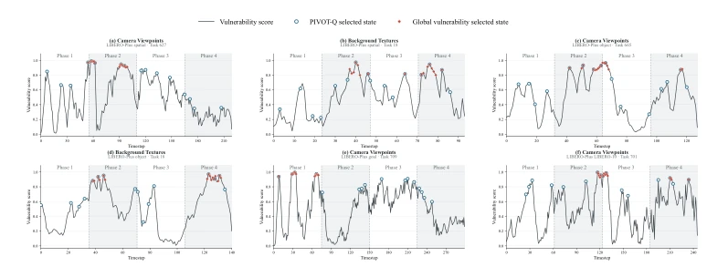
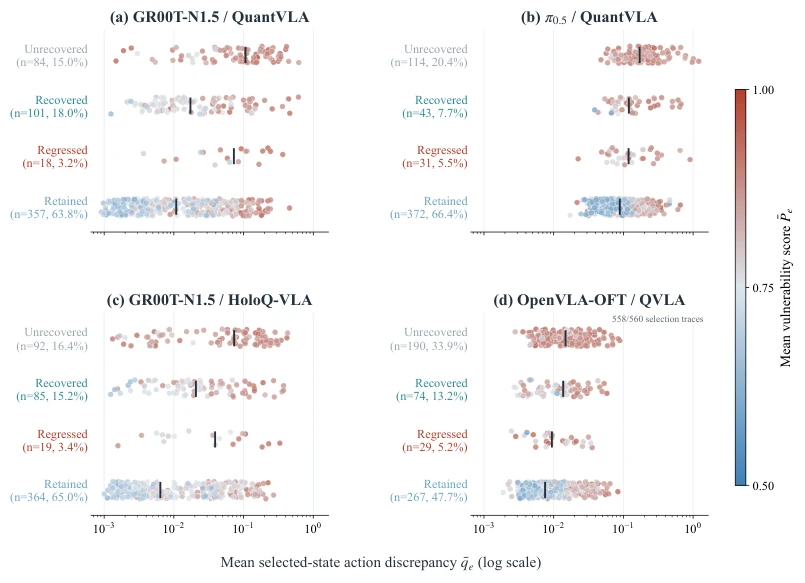
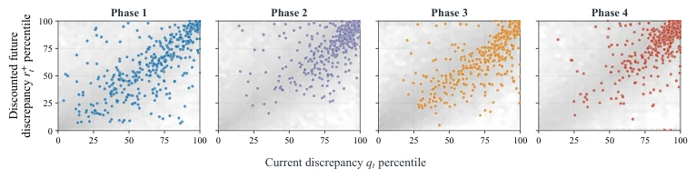

Quantized VLA is like an athlete in a tight suit; it performs in static tests but "cramps" when encountering environmental disturbances. This paper avoids "one-size-fits-all" distillation, instead employing "precision medicine" to treat only those states prone to "illness". Although PIVOT-Q indeed saves budget (7.4%), relying on a frozen teacher model raises the concern that if the teacher itself is biased, won't the student be "sick upon sickness"? Moreover, LIBERO-Plus is a benchmark, and real deployment scenarios may be more complex. However, identifying the "non-uniform difference distribution" indeed hits the quantization pain point, serving as a shot of adrenaline for quantization deployment and proving the effectiveness of "less is more" in recovering generalization.
研究动机Motivation
现有量化方法（如 QuantVLA, Zhang et al., 2026; HoloQ-VLA, Wang et al., 2026）主要关注分布内性能，忽略了环境扰动下的泛化能力。研究发现，量化策略在光照、物体姿态等细微变化下，成功率显著下降（Fei et al., 2026）。更关键的是，动作差异并非均匀分布，而是集中在少数高差异状态。现有蒸馏方法（如 VLA-OPD, Zhong et al., 2026）缺乏对状态脆弱性的区分，导致要么恢复不足，要么破坏原有鲁棒性。因此，如何识别并修复这些“脆弱状态”而非全局蒸馏，是恢复泛化性能的关键。
Existing quantization methods (e.g., QuantVLA, Zhang et al., 2026; HoloQ-VLA, Wang et al., 2026) primarily focus on in-distribution performance, neglecting generalization capabilities under environmental disturbances. Studies find that quantization strategies exhibit significant success rate declines under subtle variations such as lighting and object pose (Fei et al., 2026). More critically, action differences are not uniformly distributed but concentrated in a few high-difference states. Existing distillation methods (e.g., VLA-OPD, Zhong et al., 2026) lack differentiation regarding state vulnerability, resulting in either insufficient recovery or the destruction of original robustness. Therefore, identifying and repairing these "vulnerable states" rather than performing global distillation is key to recovering generalization performance.

Figure 1: Generalization degradation after quantization and action discrepancy. (a) Average success over 560 LIBERO-Plus episodes for each original and quantized policy. (b) Distributions of action discrepancy between each quantized policy and its original counterpart. The horizontal action discrepancy axis is in log-scale.
方法Method
PIVOT-Q 框架包含四个核心阶段。首先，学生策略在环境中进行 On-Policy Rollout，收集轨迹。其次，计算脆弱性评分，结合当前动作差异与未来折扣累积差异，识别高风险状态。第三，采用阶段平衡稀疏选择，将轨迹分 K 段，每段选 Top-k，避免监督集中在单一时间段。第四，引入行为锚点（Behavioral Anchor），利用原始数据集的参考状态防止策略漂移。最后，进行脆弱性加权蒸馏，对高脆弱状态赋予更高权重。整个流程通过冻结全精度教师指导量化学生，实现针对性修复。具体而言，脆弱性评分公式引入了时间折扣因子，强调近期偏差。阶段平衡机制确保轨迹覆盖，防止监督盲区。行为锚点通过回放缓冲区采样，约束策略在已保留行为上的漂移。这种设计使得模型在修复脆弱性的同时，不破坏原有的鲁棒性，实现了效率与性能的平衡。
The PIVOT-Q framework comprises four core stages. First, the student policy performs On-Policy Rollout in the environment to collect trajectories. Second, vulnerability scores are calculated by combining current action differences with future discounted cumulative differences to identify high-risk states. Third, stage-balanced sparse selection is adopted, dividing trajectories into K segments and selecting Top-k per segment to avoid supervision concentration in a single time period. Fourth, a Behavioral Anchor is introduced, utilizing reference states from the original dataset to prevent policy drift. Finally, vulnerability-weighted distillation is conducted, assigning higher weights to high-vulnerability states. The entire process utilizes a frozen full-precision teacher to guide the quantized student, achieving targeted repair. Specifically, the vulnerability score formula incorporates a time discount factor, emphasizing recent bias. The stage balance mechanism ensures trajectory coverage and prevents supervision blind spots. The behavioral anchor constrains policy drift on retained behaviors through replay buffer sampling. This design enables the model to repair vulnerabilities without compromising original robustness, achieving a balance between efficiency and performance.

Figure 2: Overview of PIVOT-Q. PIVOT-Q identifies vulnerable states from student-controlled rollouts using discounted accumulated discrepancy within a short future segment, performs phase- balanced sparse distillation, and uses a Behavioral Anchor to preserve retained behavior.

Figure 5: Temporal coverage of sparse selection. Six LIBERO-Plus rollouts span camera- viewpoint and background-texture variations across Spatial, Object, Goal, and Long. Red diamonds denote global vulnerability selection; blue circles denote PIVOT-Q. Both select 16 states. Global se- lection occupies one or two phases in these examples, while PIVOT-Q selects four states per phase.
Seven distribution shifts were tested on the LIBERO-Plus benchmark, covering four model-quantization settings (e.g., GR00T-N1.5 + QuantVLA). Results indicate that PIVOT-Q's average success rate is significantly superior to Full-State Distillation (FSD), while utilizing only 7.4% of the distillation budget. Ablation studies demonstrate that removing the behavioral anchor leads to performance degradation and training instability, while ignoring future differences also weakens recovery effects. Figures 5 and 6 further validate the effectiveness of stage balance selection, proving that sparse supervision is more efficient than dense supervision. Furthermore, consistent performance is observed across different quantization precisions (W4A8, W4A4), demonstrating the method's generalizability.

Figure 6: Selection diagnostics and paired recovery outcomes. The four panels correspond to GR00T-N1.5 / QuantVLA, π0.5 / QuantVLA, GR00T-N1.5 / HoloQ-VLA, and OpenVLA-OFT / QVLA. Points show mean selected-state discrepancy on a logarithmic axis; color represents mean vulnerability score using a shared continuous scale from 0.5 to 1.0, and black ticks mark group medians. Counts and percentages use all 560 final-evaluation pairs per setting. OpenVLA-OFT has 558 plotted selection records.
其他图片Other Figures

Figure 4: Phase-wise vulnerability-oriented state selection. Distribution of candidate and selected states across the four temporal phases for GR00T-N1.5 with W4A8 QuantVLA. Gray hexagonal bins denote candidate-state density, and colored points denote sampled PIVOT-Q selections.